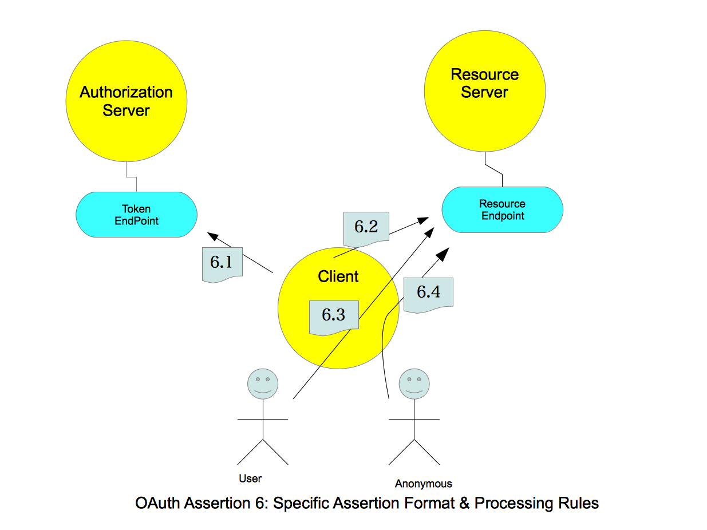

OAuth 2.0 Assertion Profile¶
http://tools.ietf.org/html/draft-ietf-oauth-assertions-01
Abstract¶
This specification provides a general framework for the use of assertions as client credentials and/or authorization grants with OAuth 2.0.
It includes a generic mechanism for transporting assertions during interactions with a token endpoint, as wells as rules for the content and processing of those assertions. The intent is to provide an enhanced security profile by using derived values such as signatures or HMACs, as well as facilitate the use of OAuth 2.0 in client-server integration scenarios where the end-user may not be present.
This specification only defines abstract message flow and assertion content. Actual use requires implementation of a companion protocol binding specification. Additional profile documents provide standard representations in formats such as SAML and JWT.
Note
Abstract message flow and assertion content for
- client credeintial
- authorization grant
Token in OAuth can be in two type of generic format (“3.1. Tokens ”):
- Handle - “artifact”
- Assertion - “self-contained token”
Table of Contents
- OAuth 2.0 Assertion Profile
- Abstract
- 1. Requirements Notation and Conventions
- 2. Overview
- 3. Authentication vs. Authorization
- 4. Transporting Assertions
- 5. Assertion Content and Processing
- 6. Specific Assertion Format and Processing Rules
- 7. Error Responses
- 8. Security Considerations
- 9. IANA Considerations
- 10. Acknowledgements
- 11. Normative References
1. Requirements Notation and Conventions¶
The key words “MUST”, “MUST NOT”, “REQUIRED”, “SHALL”, “SHALL NOT”, “SHOULD”, “SHOULD NOT”, “RECOMMENDED”, “MAY”, and “OPTIONAL” in this document are to be interpreted as described in [RFC2119] .
Throughout this document, values are quoted to indicate that they are to be taken literally. When using these values in protocol messages, the quotes MUST NOT be used as part of the value.
2. Overview¶
Note
Assertions in this spec are for:
- clent credential ( for 3rd party authentication )
- authorization grant
Definitions are for:
- abstract message flow ( 4. Transporting Assertions )
- assertion content ( 5. Assertion Content and Processing )
The OAuth 2.0 Authorization Protocol [I-D.ietf.oauth-v2] provides a method for making authenticated HTTP requests to a resource using an access token. Access tokens are issued to clients by an authorization server with the (sometimes implicit) approval of the resource owner. These access tokens are typically obtained by exchanging an authorization grant representing authorization by the resource owner or privileged administrator. Several authorization grant types are defined to support a wide range of client types and user experiences. OAuth also allows for the definition of new extension grant types to support additional clients or to provide a bridge between OAuth and other trust frameworks. Finally, OAuth allows the definition of additional authentication mechanisms to be used by clients when interacting with the authorization server.
In scenarios where security is at a premium one wants to avoid sending secrets across the Internet, even on encrypted connections. Instead one wants to send values derived from the secret that prove to the receiver that the sender is in possession of the secret without actually sending the secret. Typically the way derived values are created is by generating an assertion that is then either HMAC’ed or digitally signed using an agreed upon secret. By validating the HMAC or digital signature on the assertion, the receiver can prove to themselves that the entity that generated the assertion was in possession of the secret without actually communicating the secret directly.
This specification provides a general framework for the use of assertions as client credentials and/or authorization grants with OAuth 2.0. It includes a generic mechanism for transporting assertions during interactions with a token endpoint, as wells as rules for the content and processing of those assertions. The intent is to provide an enhanced security profile by using derived values such as signatures or HMACs, as well as facilitate the use of OAuth 2.0 in client-server integration scenarios where the end-user may not be present.
This specification only defines abstract message flow and assertion content. Actual use requires implementation of a companion protocol binding specification. Additional profile documents provide standard representations in formats such as SAML and JWT.
3. Authentication vs. Authorization¶
This specification provides a model for using assertions for authentication of an OAuth client during interactions with an Authorization Server, as well as the use of assertions as authorization grants. It is important to note that the use of assertions for client authentication is orthogonal [1] and separable from using assertions as an authorization grant and can be used either in combination or in isolation. In addition, in scenarios when assertion based authentication and authorization are used in combination, the assertion format and processing may be redundant; under such circumstances, the protocol may be optimized to present a single assertion.
| [1] | (statically) unrelated |
4. Transporting Assertions¶
This section defines generic HTTP parameters for transporting assertions during interactions with a token endpoint.
Transportations:
4.1. Using Assertions for Client Authentication¶
In scenarios where one wants to avoid sending secrets, one wants to send values derived from the secret that prove to the receiver that the sender is in possession of the secret without actually sending the secret.
For example, a client can establish a secret using an out-of-band mechanism with a resource server. As part of this out-of-band communication the client and resource server agree that the client will authenticate itself using an assertion with agreed upon parameters that will be signed by the provisioned secret. Later on, the client might send an access token request to the token endpoint for the resource server that includes an authorization code, as well as a client_assertion that is signed with the previously agreed key and parameters. The client_assertion proves to the token endpoint the identity of the client and the authorization code provides the link to the end-user authorization.
The following section defines the use of assertions as client credentials as an extension of Section 3.2 of OAuth 2.0 [I-D.ietf.oauth-v2]. When using assertions as client credentials, the client MUST include the assertion using the following HTTP request parameters:
- client_id
- OPTIONAL. The client identifier as described in Section 3 of OAuth 2.0 [I-D.ietf.oauth-v2].
- client_assertion_type
- REQUIRED. The format of the assertion as defined by the authorization server. The value MUST be an absolute URI.
- client_assertion
- REQUIRED. The assertion being used to authenticate the client. Specific serialization of the assertion is defined by profile documents. The serialization MUST be encoded for transport within HTTP forms. It is RECOMMENDED that base64url be used.
The following non-normative example demonstrates a client authenticating using an assertion during an Authorization Code Access Token Request as defined in Section 4.1.3 of OAuth 2.0 [I-D.ietf.oauth-v2]. (line breaks are for display purposes only):
POST /token HTTP/1.1
Host: server.example.com
Content-Type: application/x-www-form-urlencoded
grant_type=authorization_code&
code=i1WsRn1uB1&
client_id=s6BhdRkqt3&
client_assertion_type=urn%3Aoasis%3Anames%sAtc%3ASAML%3A2.0%3Aassertion&
client_assertion=PHNhbWxwOl...[omitted for brevity]...ZT
The client MUST NOT include the client_credential using more than one mechanism. Token endpoints can differentiate between client assertion credentials and other client credential types by looking for the presence of the client_assertion and client_assertion_type attributes which will only be present with client assertion credentials. See section 7 for more details
4.2. Using Assertions as Authorization Grants¶
An assertion can be used to request an access token when a client wishes to utilize an existing trust relationship. This may be done through the semantics of (and a digital signature/HMAC calculated over) the assertion, and expressed to the authorization server through an extension authorization grant type. The processes by which authorization is previously granted, and by which the client obtains the assertion prior to exchanging it with the authorization server, are out of scope.
The following defines the use of assertions as authorization grants as an extension of OAuth 2.0 [I-D.ietf.oauth-v2], section 4.5. When using assertions as authorization grants, the client MUST include the assertion using the following HTTP request parameters:
- client_id
- OPTIONAL. The client identifier as described in Section 3 of OAuth 2.0 [I-D.ietf.oauth-v2].
- grant_type
- REQUIRED. The format of the assertion as defined by the authorization server. The value MUST be an absolute URI.
- assertion
- REQUIRED. The assertion being used as an authorization grant. Specific serialization of the assertion is defined by profile documents. The serialization MUST be encoded for transport within HTTP forms. It is RECOMMENDED that base64url be used.
- scope
- OPTIONAL. The request MAY contain a “scope” parameter. The scope of the access request is expressed as a list of space-delimited strings. The value is defined by the authorization server. If the value contains multiple space-delimited strings, their order does not matter, and each string adds an additional access range to the requested scope. When exchanging assertions for access_tokens, the authorization for the token has been previously granted through some other mechanism. As such, the requested scope SHOULD be equal or lesser than the scope originally granted to the authorized accessor. If the scope parameter and/or value is omitted, the scope SHOULD be treated as equal to the scope originally granted to the authorized accessor. The Authorization Server SHOULD limit the scope of the issued access token to be equal or lesser than the scope originally granted to the authorized accessor.
The following non-normative example demonstrates an assertion being used as an authorization grant. (line breaks are for display purposes only):
POST /token HTTP/1.1
Host: server.example.com
Content-Type: application/x-www-form-urlencoded
client_id=s6BhdRkqt3&
grant_type=urn%3Aoasis%3Anames%sAtc%3ASAML%3A2.0%3Aassertion&
assertion=PHNhbWxwOl...[omitted for brevity]...ZT4
5. Assertion Content and Processing¶
This section provides a general content and processing model for the use of assertions in OAuth 2.0 [I-D.ietf.oauth-v2].
Formats:
5.1. Assertion Metamodel¶
The following are entities and metadata involved in the issuance, exchange and processing of assertions in OAuth 2.0. These are general terms, abstract from any particular assertion format. Mappings of these terms into specific representations are provided by profiles of this specification.
- Issuer
- The unique identifier for the entity that issued the assertion. Generally this is the entity that holds the keying material used to generate the assertion. In some use-cases Issuers may be either OAuth Clients (when assertions are self- asserted ) or a Security Token Service (an entity capable of issuing, renewing, transforming and validating of security tokens).
- Principal
- A unique identifier for the subject of the assertion. When using assertions for client authentication, the Principal SHOULD be the client_id of the OAuth client. When using assertions as an authorization grant, the Principal MUST identify an authorized accessor for whom the access token is being requested (typically the resource owner, or an authorized delegate).
- Audience
- A URI that identifies the party intended to process the assertion. The audience SHOULD be the URL of the Token Endpoint as defined in section 2.2 of OAuth 2.0 [I-D.ietf.oauth-v2].
- Issued At
- The time at which the assertion was issued. While the serialization may differ by assertion format, this is always expressed in UTC with no time zone component.
- Expires At
- The time at which the assertion expires. While the serialization may differ by assertion format, this is always expressed in UTC with no time zone component.
- Assertion ID
- A nonce or unique identifier for the assertion. The Assertion ID may be used by implementations requiring message de- duplication for one-time use assertions. Any entity that assigns an identifier MUST ensure that there is negligible probability that that entity or any other entity will accidentally assign the same identifier to a different data object.
5.2. General Assertion Format and Processing Rules¶
The following are general format and processing rules for the use of assertions in OAuth:
- The assertion MUST contain an Issuer. The Issuer MUST identify the entity that issued the assertion as recognized by the Authorization Server. If an assertion is self-asserted, the Issuer SHOULD be the client_id.
- The assertion SHOULD contain a Principal. The Principal MUST identify an authorized accessor for whom the access token is being requested ( typically the resource owner, or an authorized delegate ) When the client is acting on behalf of itself, the Principal SHOULD be the client_id.
- The assertion MUST contain an Audience that identifies the Authorization Server as the intended audience. The Authorization Server MUST verify that it is an intended audience for the assertion. The Audience SHOULD be the URL of the Authorization Server’s Token Endpoint.
- The assertion MUST contain an Expires At entity that limits the time window during which the assertion can be used. The authorization server MUST verify that the expiration time has not passed, subject to allowable clock skew between systems. The authorization server SHOULD reject assertions with an Expires At attribute value that is unreasonably far in the future.
- The assertion MAY contain an Issued At entity containing the UTC time at which the assertion was issued.
- The assertion MAY contain an Assertion ID. An Authorization Server MAY dictate that Assertion ID is mandatory.
- The Authorization Server MUST validate the assertion in order to establish a mapping between the Issuer and the secret used to generate the assertion. The algorithm used to validate the assertion, and the mechanism for designating the secret used to generate the assertion is out-of-scope for this specification.
6. Specific Assertion Format and Processing Rules¶
The following clarifies the format and processing rules defined in section 4 and section 5 for a number of common use-cases:
Format and Rules:
6.1. Client authentication¶
When a client authenticates to a token service using an assertion, it SHOULD do so according to section 4.1. The following format and processing rules SHOULD be applied:
- The client_id HTTP parameter SHOULD identify the client to the authorization server.
- The client_assertion_type HTTP parameter MUST identify the assertion format being used for authentication.
- The client_assertion HTTP parameter MUST contain the serialized assertion in a format indicated by the client_assertion_type parameter.
- The Issuer of the assertion MUST identify the entity that issued the assertion as recognized by the Authorization Server. If the assertion is self-asserted, the Issuer SHOULD be the client_id.
- The Principal MUST identify an authorized accessor. If the assertion is self-issued, the Principal SHOULD be the client_id.
- The Audience of the assertion MUST identify the Authorization Server and SHOULD be the URL of the Token Endpoint.
- The Authorization Server MUST validate the assertion in order to establish a mapping between the Issuer and the secret used to generate the assertion.
The following non-normative example demonstrates the use of a client authentication using an assertion during an Authorization Code Access Token Request as defined in Section 4.1.3 of OAuth 2.0 [I-D.ietf.oauth-v2]. (line breaks are for display purposes only):
POST /token HTTP/1.1
Host: server.example.com
Content-Type: application/x-www-form-urlencoded
grant_type=authorization_code&
code=i1WsRn1uB1&
client_id=s6BhdRkqt3&
client_assertion_type=urn%3Aoasis%3Anames%sAtc%3ASAML%3A2.0%3Aassertion&
client_assertion=PHNhbWxwOl...[omitted for brevity]...ZT4
6.2. Client acting on behalf of itself¶
When a client is accessing resources on behalf of itself, it SHOULD do so in a manner analogous to the Client Credentials flow defined in Section 4.4 of OAuth 2.0 [I-D.ietf.oauth-v2]. This is a special case that combines both the authentication and authorization grant usage patterns. In this case, the interactions with the authorization server SHOULD be treated as using an assertion for Client Authentication according to section 4.1, with the addition of a grant_type parameter.
The following format and processing rules SHOULD be applied.
- The client_id HTTP parameter SHOULD identify the client to the authorization server.
- The grant_type HTTP request parameter MUST be “client_credentials”.
- The client_assertion_type HTTP parameter MUST identify the assertion format.
- The client_assertion HTTP parameter MUST contain the serialized assertion as in a format indicated by the client_assertion_type parameter.
- The Issuer of the assertion MUST identify the entity that issued the assertion as recognized by the Authorization Server. If the assertion is self-asserted, the Issuer SHOULD be the client_id. If the assertion was issued by a Security Token Service, the Issuer SHOULD identify the STS as recognized by the Authorization Server.
- The Principal SHOULD be the client_id.
- The Audience of the assertion MUST identify the Authorization Server and SHOULD be the URL of the Token Endpoint.
- The Authorization Server MUST validate the assertion in order to establish a mapping between the Issuer and the secret used to generate the assertion.
The following non-normative example demonstrates the use of a sample assertion being used for a Client Credentials Access Token Request as defined in Section 4.4.2 of OAuth 2.0 [I-D.ietf.oauth-v2]. (line breaks are for display purposes only):
POST /token HTTP/1.1
Host: server.example.com
Content-Type: application/x-www-form-urlencoded
client_id=s6BhdRkqt3&
grant_type=client_credentials&
client_assertion_type=urn%3Aoasis%3Anames%sAtc%3ASAML%3A2.0%3Aassertion&
client_assertion=PHNhbWxwOl...[omitted for brevity]...ZT4%3D
6.3. Client acting on behalf of a user¶
Note
I’m not quite sure what use case is taken accounted into....
When a client is accessing resources on behalf of a user, it SHOULD be treated as using an assertion as an Authorization Grant according to section 4.2. The following format and processing rules SHOULD be applied:
- The client_id HTTP parameter MUST identify the client to the authorization server.
- The grant_type HTTP request parameter MUST indicate the assertion format.
- The assertion HTTP parameter MUST contain the serialized assertion as in a format indicated by the grant_type parameter.
- The Issuer of the assertion MUST identify the entity that issued the assertion as recognized by the Authorization Server. If the assertion is self-asserted, the Issuer SHOULD be the client_id. If the assertion was issued by a STS, the Issuer SHOULD identify the STS as recognized by the Authorization Server.
- The Principal MUST identify an authorized accessor for whom the access token is being requested (typically the resource owner, or an authorized delegate).
- The Audience of the assertion MUST identify the Authorization Server and MAY be the URL of the Token Endpoint.
- The Authorization Server MUST validate the assertion in order to establish a mapping between the Issuer and the secret used to generate the assertion.
The following non-normative example demonstrates the use of a client authenticating using an assertion during an Authorization Code Access Token Request as defined in Section 4.1.3 of OAuth 2.0 [I-D.ietf.oauth-v2]. (line breaks are for display purposes only):
POST /token HTTP/1.1
Host: server.example.com
Content-Type: application/x-www-form-urlencoded
client_id=s6BhdRkqt3&
grant_type=urn%3Aoasis%3Anames%sAtc%3ASAML%3A2.0%3Aassertion&
assertion=PHNhbWxwOl...[omitted for brevity]...ZT4%3D
6.4. Client acting on behalf of an anonymous user¶
When a client is accessing resources on behalf of an anonymous user, the following format and processing rules SHOULD be applied:
- The client_id HTTP parameter MUST identify the client to the authorization server.
- The grant_type HTTP request parameter MUST indicate the assertion format.
- The assertion HTTP parameter MUST contain the serialized assertion as in a format indicated by the grant_type parameter.
- The Issuer of the assertion MUST identify the entity that issued the assertion as recognized by the Authorization Server. If the assertion is self-asserted, the Issuer SHOULD be the client_id. If the assertion was issued by a Security Token Service, the Issuer SHOULD identify the STS as recognized by the Authorization Server.
- The Principal SHOULD indicate to the Authorization Server that the client is acting on-behalf of an anonymous user as defined by the Authorization Server. It is implied that authorization is based upon additional criteria, such as additional attributes or claims provided in the assertion. For example, a client may present an assertion from a trusted issuer asserting that the bearer is over 18 via an included claim. In this case, no additional information about the user’s identity is included yet all the data needed to issue an access token is present.
- The Audience of the assertion MUST identify the Authorization Server and MAY be the URL of the Token Endpoint.
- The Authorization Server MUST validate the assertion in order to establish a mapping between the Issuer and the secret used to generate the assertion.
7. Error Responses¶
If an assertion is not valid or has expired, the Authorization Server MUST construct an error response as defined in OAuth 2.0 [I-D.ietf.oauth-v2]. The value of the error parameter MUST be the “invalid_grant” error code. The authorization server MAY include additional information regarding the reasons the assertion was considered invalid using the “error_description” or “error_uri” parameters.
For example:
HTTP/1.1 400 Bad Request
Content-Type: application/json
Cache-Control: no-store
{
"error":"invalid_grant",
"error_description":"Audience validation failed"
}
A client MUST NOT include client credentials using more than one mechanism. Token endpoints can differentiate between assertion based credentials and other client credential types by looking for the presence of the client_assertion and client_assertion_type attributes which will only be present when using assertions for client authentication.
If more than one mechanism is used, the Authorization Server MUST construct an error response as defined in OAuth 2.0 [I-D.ietf.oauth-v2]. The value of the error parameter MUST be the “invalid_client” error code. The authorization server MAY include additional information regarding the reasons the client was considered invalid using the “error_description” or “error_uri” parameters.
For example:
HTTP/1.1 400 Bad Request
Content-Type: application/json
Cache-Control: no-store
{
"error":"invalid_client"
"error_description":"Multiple Credentials Not Allowed"
}
8. Security Considerations¶
Authorization Providers concerned with preventing replay attacks may choose to implement using replay detection using a combination of the AssertionID and IssuedAt/ExpiredAt attributes. Previously processed assertions MAY be de-duped and rejected based on the AssertionID.
The addition of the validity window relieves the authorization server from maintaining an infinite state table of processed assertion IDs.
Authorization Servers SHOULD consider the amount of information exposed in error responses, and the risk associated with exposing details of specific processing errors. In addition, Authorization Servers SHOULD prevent timing attacks related to cryptographic processing of the assertion.
No additional considerations beyond those described within the OAuth 2.0 Protocol Framework, Section 10 [I-D.ietf.oauth-v2].
9. IANA Considerations¶
9.1. Parameter Registration Request¶
The following is the parameter registration request, as defined in The OAuth Parameters Registry of The OAuth 2.0 Authorization Protocol [I-D.ietf.oauth-v2], for the “assertion” parameter:
- Parameter name: assertion
- Parameter usage location: client authentication, token request
- Change controller: IETF
- Specification document(s): [[this document]]
9.2. Parameter Registration Request¶
The following is the parameter registration request, as defined in The OAuth Parameters Registry of The OAuth 2.0 Authorization Protocol [I-D.ietf.oauth-v2], for the “client_assertion” parameter:
- Parameter name: client_assertion
- Parameter usage location: client authentication, token request
- Change controller: IETF
- Specification document(s): [[this document]]
9.3. Parameter Registration Request¶
The following is the parameter registration request, as defined in The OAuth Parameters Registry of The OAuth 2.0 Authorization Protocol [I-D.ietf.oauth-v2], for the “client_assertion_type” parameter:
- Parameter name: client_assertion_type
- Parameter usage location: client authentication, token request
- Change controller: IETF
- Specification document(s): [[this document]]
10. Acknowledgements¶
The authors wish to thank the following people that have influenced or contributed this specification: Paul Madsen, Eric Sachs, Jian Cai, Tony Nadalin, the authors of OAuth WRAP, and those in the OAuth 2 working group.
11. Normative References¶
- [I-D.ietf.oauth-v2]
- Hammer-Lahav, E., “The OAuth 2.0 Authorization Protocol”, September 2011.
- [RFC2119]
- Bradner, S., “Key words for use in RFCs to Indicate Requirement Levels”, BCP 14, RFC 2119, March 1997.